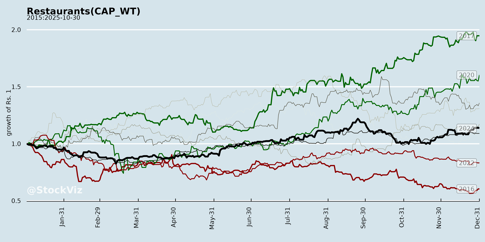
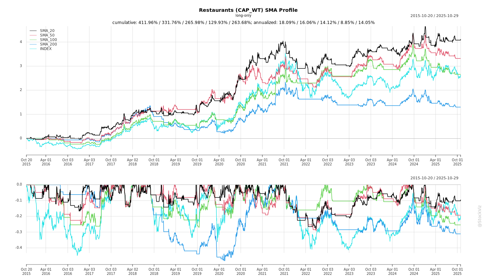
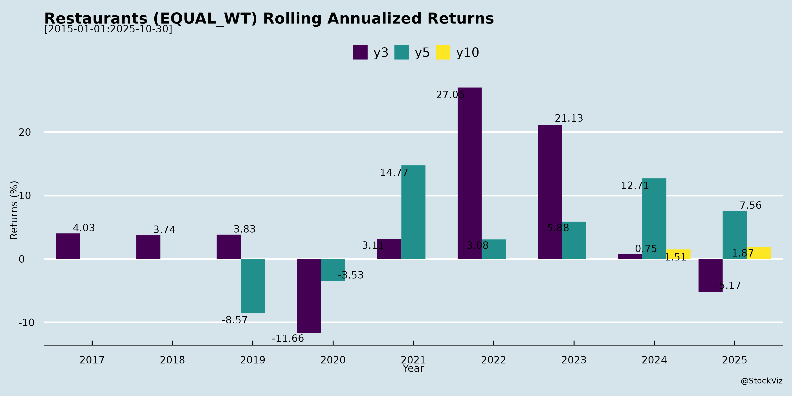
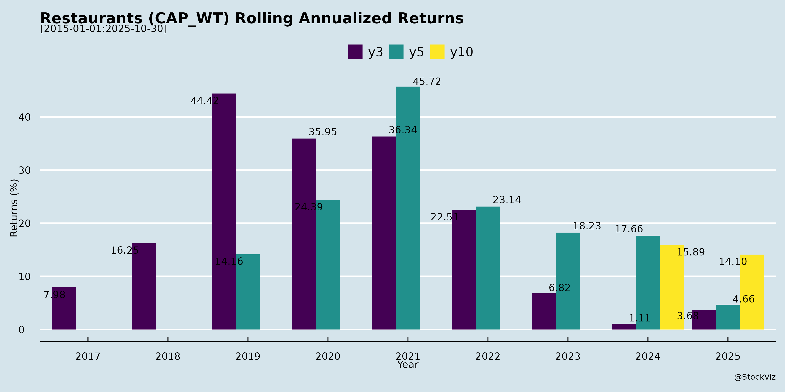

asof: 2025-11-29
Indian Restaurant/QSR Sector Analysis (Based on Q2/H1 FY26 Earnings Transcripts)
The analysis draws from transcripts of key players: Devyani International (DIL - KFC/Pizza Hut), Jubilant Foodworks (JFL - Domino’s/Popeyes), Westlife Foodworld (McDonald’s), Speciality Restaurants, Travel Food Services (TFS - Airport F&B), and others (e.g., Sapphire Foods, Restaurant Brands Asia). Sector shows resilience amid demand weakness, with organized players gaining share via expansion/innovation, but facing short-term headwinds.
Headwinds (Short-term Pressures)
Tailwinds (Positive Drivers)
Growth Prospects (Medium-Long Term)
Key Risks
Overall Summary: Sector resilient (topline +4-20% YoY despite SSSG weakness) via expansion (store adds 30-93/quarter) and efficiencies (gross margins peak). Short-term headwinds from demand/festives (~Q3 recovery expected); long-term tailwinds intact (8-9% aviation/QSR CAGR, digital/innovation). Leaders (JFL/TFS outperforming) eye 15%+ growth; risks tilted to demand execution. Organized share to rise; monitor H2 festives for inflection.
asof: 2025-12-01
Summary Analysis of Indian Restaurants Sector (Q3 & 9M FY25)
Based on the Q3 & 9M FY25 financial results of key players—Jubilant FoodWorks (Dominos), Westlife Foodworld (McDonald’s India), Restaurant Brands Asia (Burger King India), Coffee Day Enterprises, Barbeque-Nation Hospitality, and Speciality Restaurants—the sector shows resilient revenue growth amid profitability pressures. Overall, consolidated revenue grew ~20-30% YoY on average (driven by expansions/acquisitions), but EBITDA margins contracted 200-500 bps due to costs. Jubilant & Speciality shone; Coffee Day faces existential risks.
Headwinds (Key Challenges)
Tailwinds (Positives)
Growth Prospects
Key Risks
| Risk Category | Details | Exposure |
|---|---|---|
| Financial | High debt (Coffee Day ₹1,273 Cr borrowings; covenant defaults/NCLT stay till Feb’25). Unprovisioned dues (Coffee Day MACEL ₹3,373 Cr). | High (Coffee Day existential; others moderate). |
| Operational | Input inflation, competition (QSR wars). Store closures (Coffee Day 15 cafes). | Medium. |
| Regulatory/Legal | Auditor disclaimers (Coffee Day going concern, interest non-accrual ₹43 Cr). SEBI penalties stayed; arbitration pending. Forex (intl ops 10-20% rev). | High (Coffee Day); Low others. |
| Execution | Expansion capex delays; intl ramp-up (RBA Indonesia losses). | Medium. |
Overall Outlook: Sector poised for 15-20% FY25 growth (rev/EBITDA), led by leaders (Jubilant/Speciality). Coffee Day outlier (avoid); monitor debt resolution. Tailwinds > headwinds for scaled players; risks skewed to leveraged firms. Investors: Favor low-debt, high-SSSG names.
asof: 2025-12-03
Summary Analysis of Indian Restaurant Sector (QSR/Casual Dining) Based on Provided Filings
The filings from key players (Jubilant FoodWorks, Devyani International, Westlife Foodworld, Sapphire Foods, Restaurant Brands Asia, Coffee Day Enterprises, Barbeque-Nation Hospitality, Speciality Restaurants) highlight a resilient sector focused on expansion, governance, and sustainability amid mixed operational performance. Below is a structured analysis of tailwinds, headwinds, growth prospects, and key risks.
Tailwinds (Positive Factors)
Headwinds (Challenges)
Growth Prospects
Key Risks
Overall Outlook: Sector shows proactive expansion and professionalization (ESG, tech, incentives), but near-term headwinds from soft sales require demand recovery. Growth hinges on execution in Tier II/III and international markets, with Barbeque’s playbook (diversification, 18% CAGR) as a positive template. Positive macro tailwinds support mid-term upside to $80 Bn market.
asof: 2025-11-29
Indian Restaurants Sector Analysis (QSR, Casual Dining & Airport F&B)
Based on Q2/H1 FY26 Earnings Transcripts (DIL, Jubilant FoodWorks, TFS, Westlife Foodworld, Speciality Restaurants) – Dated Nov 2025
Headwinds (Key Challenges)
Tailwinds (Positive Drivers)
Growth Prospects
Key Risks
Overall Summary: Sector resilient amid demand trough (weak Q2 SSSG, traffic dips) via cost controls (gross margins 67-72%) & expansion (450-3,500 stores/company). Tailwinds from digital/innovation/airports offset headwinds; prospects strong (double-digit revenue growth via 100+ stores/yr, delivery). Risks center on macro revival & execution; optimistic H2 (festives, GST boost) but Vision 2027 targets (e.g., Westlife margins/stores) key watchpoints. FY26 revenue/EBITDA growth ~10-20% feasible if SSSG turns positive.
asof: 2025-12-01
Summary Analysis of Indian Restaurant Industry (Q2/H1 FY26 Insights from Listed Players)
The provided documents cover Q2/H1 FY26 (Apr-Sep 2025) financial results and announcements from key listed players: Jubilant FoodWorks (Domino’s India/SL/B’desh/Turkey), Devyani International (KFC/Pizza Hut India/Intl), Sapphire Foods (KFC/Pizza Hut India/SL), Restaurant Brands Asia (Burger King India/Indonesia), United Foodbrands (Barbeque-Nation), Speciality Restaurants, Coffee Day Enterprises, and others. These represent QSR (Quick Service Restaurants), casual dining, and airport F&B segments. Overall, revenue grew modestly (5-20% YoY) driven by store expansions, but losses widened due to high costs/debt. India ops resilient; intl ops (e.g., Turkey, Indonesia, Russia exit) drag performance. EBITDA margins ~6-15% (positive for most), but PAT negative amid expansions.
Headwinds (Key Challenges Observed)
Tailwinds (Positive Factors)
Growth Prospects
Key Risks
Overall: Industry in expansion mode but profitability challenged (avg PAT margins -2-5%). JFL resilient leader; others need cost control. Growth intact via outlets/digital, but debt/costs pose near-term risks. Positive: Strong cash ops fund expansions. Monitor intl recovery & festive Q3.
asof: 2025-11-29
Summary Analysis of Indian QSR/Restaurant Sector (Based on Q2 FY26 Results from Devyani International, Restaurant Brands Asia, Sapphire Foods, Speciality Restaurants, Travel Food Services, and Westlife Foodworld)
The Q2 FY26 results reflect a resilient yet challenged Indian QSR sector amid subdued out-of-home consumption. Revenue growth was muted (4-13% YoY consolidated), driven by expansions but offset by weak SSSG (-3% to +2.8%). EBITDA margins contracted (e.g., Sapphire 14.3% ↓230bps; Devyani 14.1%) due to deleverage and higher delivery mix, though gross margins improved via supply chain efficiencies. PAT was mixed, with TFS showing strong growth (15.3% YoY adjusted). Below is a structured analysis of headwinds, tailwinds, growth prospects, and key risks.
Headwinds (Challenges Pressuring Performance)
Tailwinds (Positive Drivers)
Growth Prospects (Medium-Term Opportunities)
Key Risks (Potential Threats)
Overall Sector Outlook: Moderately positive with structural tailwinds from urbanization/airport growth outweighing cyclical headwinds. H2 festive recovery + expansions could drive 10-15% system sales growth FY26, but SSSG rebound critical for margins. Focus on value/digital positions leaders (Devyani/Sapphire/TFS) for outperformance; monitor consumption revival.
Copyright © 2023 SAS Data Analytics Pvt. Ltd. All rights reserved.